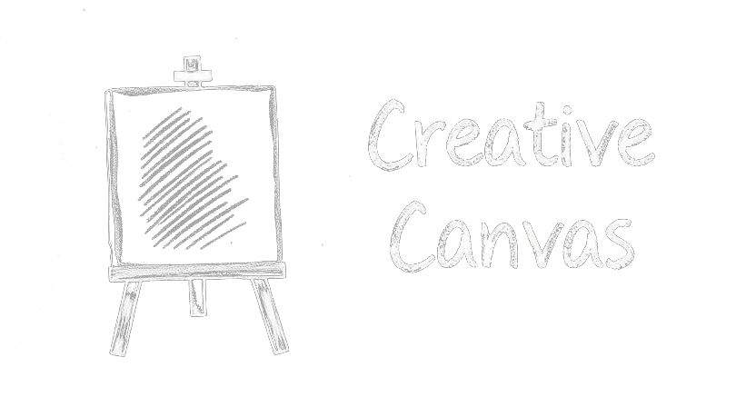
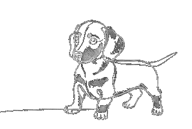

1
LEFT · TOP
The remote control
This is the Dashboard. It sticks to the left side of the stage. Move the stage, the remote comes too. Make the stage bigger or smaller, the remote shrinks or grows to fit.


A tiny TV studio for Discord. Put your camera, a website, a video and chat words on one stage, Creative Canvas sends the whole stage to Discord as one camera.
Left is the Dashboard, the remote control. Right is the Canvas, the stage. They are docked together and always move as one. Find a number in the picture, then read what it means in the descriptions right below it.
WHAT THE NUMBERS MEAN
This is the Dashboard. It sticks to the left side of the stage. Move the stage, the remote comes too. Make the stage bigger or smaller, the remote shrinks or grows to fit.
These 6 little buttons each do one job, words, video, pictures, numbers, settings, or colours. The blue one is open right now.
This is where you change the thing you picked. In the picture, it is changing a website. Give it a name, paste its link, and choose how Discord sees it.
Paste a link in the box. Press Load. The website appears on the stage. You can also pick the dark Night look and the picture size, 720p, big and clear.
This is what your friends will see. Everything is a box on the stage, you, a website, a video, chat words. Drag a box to move it. Pull its corner to make it bigger.
Tap the big + to add something new. The tiny MEM word tells you how much memory the app is using.
Want it on your phone? Get Creative Canvas for Android and run the whole studio yourself.
Terms accepted, you're good to go. Tap the button and the APK file is yours. When it finishes, open it on your Android phone to install, your phone may ask you to allow installs from your browser, just this once.
⬇ Download Creative Canvas v3.2 APKChanged your mind? Nothing is installed until you open the file yourself, you can delete the download at any time.
The Webviewer is a tiny web browser that lives inside Creative Canvas. Give it a link, any link, and it opens that website in its own little window, right on the stage.
Type or paste the website's address in the Website URL box at the top of the Canvas, or in the Web Source settings in the Dashboard. A YouTube link, a vdo.ninja link, a news page, any website works the same way.
Press Load up top, or Apply in the settings. That tells the Webviewer: “Go get this page.” It fetches the website, just like a normal browser does when you open a tab.
The website loads in a small window inside the Canvas, that window is called an iframe. The site is really there, live: videos can play, pages can scroll, and with Interactive switched on, your taps work on the site itself.
Once loaded, the website is just one box on the stage, like your camera or a picture. Drag it to move it, pull its corner to resize it, and use Zoom in / Zoom out in its settings to make the page inside look bigger or smaller so it fits just right.
Tick Mirror and the app takes fast photos of the Webviewer, 10 times every second, and puts them on the broadcast. That is how the website, YouTube included, reaches your friends in Discord as moving video, even when a site will not share itself directly.
If a page gets stuck or stays black, press Reload source to load it again, or Open in a new tab to see it full-size. Some sites say “no” to living inside another page, for those, the Mirror trick in Step 5 is the way around.
In short: link in → Webviewer loads it → it sits on the stage → Discord sees it. One Webviewer per Web Source, add more sources to show more websites at once.
Start at 1 and hop to 6. Every number in the picture has the same number here.
This is the Dashboard. It sticks to the left side of the stage. Move the stage, the remote comes too. Make the stage bigger or smaller, the remote shrinks or grows to fit.
These 6 little buttons each do one job, words, video, pictures, numbers, settings, or colours. The blue one is open right now.
This is where you change the thing you picked. In the picture, it is changing a website. Give it a name, paste its link, and choose how Discord sees it.
Paste a link in the box. Press Load. The website appears on the stage. You can also pick the dark Night look and the picture size, 720p, big and clear.
This is what your friends will see. Everything is a box on the stage, you, a website, a video, chat words. Drag a box to move it. Pull its corner to make it bigger.
Tap the big + to add something new. The tiny MEM word tells you how much memory the app is using.
Number 2, opened up. One tap = one job. Here they all are:
Write words on top of the picture, like a title on a book cover.
Play a video, a link, a YouTube video, or one saved on your phone.
Put a photo or logo on the stage. Slide it around. Big or small.
See simple numbers about the app, like how much memory it is using.
Change the thing you picked. This one is open in the picture. Open the Settings window to see it step by step.
Change how it looks, like the dark Night colours.
Two more things live on the stage, too: chat words, your friends' messages drawn on top, in big letters, and your camera, front or back, in a box just like everything else. Your camera is just one little box on the stage: tuck it in a corner, big or small, you pick.
Number 3, opened up. Let's add a website, like vdo.ninja, in 4 easy steps.
In the picture, its name is “Web Source.” A name helps you find it fast. You can call it anything you like.
Paste the website's link and press Apply. Two helpers live underneath: Open in a new tab, see the site really big. Reload source, try again if it gets stuck.
Pick one button. If it doesn't work, just try the next one, like trying keys in a door.
The website plays in its own tiny window inside the app. The app takes a fast photo of it, 10 times every second, and puts the photos on the stage. That turns a website into a moving video. YouTube works this same way. It uses a bit more battery.
Two more tricks: Zoom, make the website look bigger or smaller so it fits just right. Move mode, drag to move the box, and your taps don't touch the website. Flip Interactive on when you do want your taps to touch it.
If the site stays black: some sites say “no” to living inside another page. Try a different button in Step 3, or press Open in a new tab. Discord blocks some sites itself, so the Mirror trick is the way around.
Just 4 steps. That's all it ever does.
Camera, website, YouTube, video, picture, words, or chat.
Move it. Size it. Stack it. The stage is the finished picture.
The app hands the whole stage to Discord as one pretend camera.
Your friends just see a normal camera in the call. Showtime.
Four true facts about the app.
The remote and the stage open together, right in the centre. They always move as one, and the app remembers where you left them.
Splitting your screen with a friend? The whole thing gets smaller to fit. Nothing falls off the edge.
Shrink the app into a little floating window and the website keeps playing. No freeze, no refresh needed.
Where things sit, how big they are, the zoom, the dock, all saved. For a video file, it saves only the file's name, not the video itself.
How to read this page: look at the big picture, then tap the buttons in the Guide bar. Each button opens a window like this one, drag it by its top bar, close it with the ×, its button, or the Esc key.
Before you download Creative Canvas v3.2, please read these simple rules. The download button only appears if you tap I Accept at the bottom.